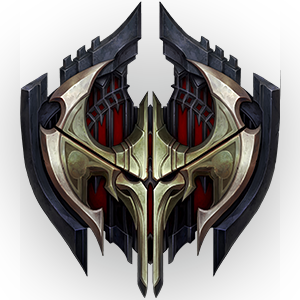
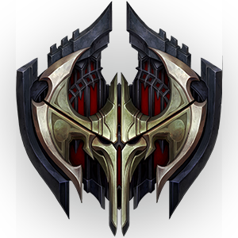

아이콘

녹서스는 악명을 널리 떨치는 강력한 제국입니다.
다른 나라에 살고 있는 이들에게 녹서스는 폭력적이고 침략을 일삼는 위험한 나라이지만,
바깥에서 보이는 호전성을 잠시 접어 두고 안을 들여다보면 특이할 정도로 포용적인 사회를 발견할 수 있습니다.
이 나라에선 모든 국민의 강점과 재능을 존중하고 계발해 주기 때문입니다.
녹서스는 한때 사나운 야만 부족이었으나 현재 영토의 수도가 된 고대 도시를 파괴한 뒤 그곳에 자리 잡았습니다.
그 후, 이들은 사방에 도사린 위협적인 적들을 상대로 물러서는 일 없이 사납게 싸웠고 해를 거듭할수록 국경을
넓혀 갔습니다. 이러한 생존을 위한 투쟁 덕분에 현대의 녹서스에는 다른 무엇보다 힘이라는 가치를 숭상하는
자존심 강한 국민성이 형성되었습니다. 물론 여기서 말하는 힘이라는 가치는 매우 다양한 방식으로 드러날 수 있습니다.
녹서스에선 신분, 배경, 출신지, 재산에 관계없이 필요한 능력을 드러내 보일 수 있다면
누구든지 출셋길에 올라 권력을 차지하고 존경을 받을 수 있습니다. 특히 마법을 쓸 줄 아는 이들은 널리 존경받으며,
녹서스는 마법사를 적극적으로 찾아내고 그들의 특별한 재능을 연마시켜 녹서스 제국을 위해 활용합니다.
이같이 능력을 중시하는 풍조에도 불구하고 오래된 귀족 가문들은 아직 상당한 힘을 행사하고 있습니다.
어떤 사람들은 녹서스에 대한 가장 큰 위협이 적이 아닌 내부에서 나타날 것이라 두려워합니다.
한국 날짜 기준 2018년 2월 16일에 녹서스의 새로운 설정과 세부 설정이 등장하였다.
AOS 게임 리그 오브 레전드에 등장하는 국가.
발로란 대륙 동부에 넓게 분포한 군국주의 제국이며, 과거에는 황제 보람 다크윌이 통치했지만
스웨인이 주도한 반란으로 황제는 죽고 현재는 공화정이 통치하고 있다.
데마시아와 라이벌 설정이며, 폭력적이지만 합리성이 공존하는 국가이다. 아이오니아, 슈리마, 프렐요드 등
많은 국가나 부족을 침략했으며, 필트오버의 기술력을 빼내고 정복하기 위해 첩자들을 보내며 음지에선
르블랑의 주도 아래 그림자 군도의 유물을 꺼내오는 등 룬테라 전역에 영향을 떨치고 있다.
국가 성향이나 챔피언들의 이름을 보면 고대 로마를 모티브로 가져온 것으로 보인다. 반면 다양한 문화와
인종이 공존하는 면에서는 현대 미국과도 모습이 닿아 있다. 또한, 정치적으로는 몽골 제국이 연상되는 부분들도 있다.
힘이 모든 것을 지배하는 사상을 가진 곳이며, 어떤 방식이던지 결과적으로 승리하면 되기에 승리를 위한 수단이라면
무엇이든지 사용하는 성향을 보여준다.
엠블럼

아이콘